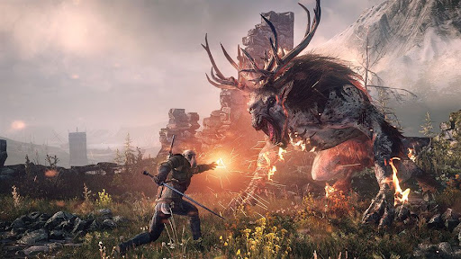

Reseñas Destacadas
The Legend of Zelda: Breath of the Wild

Una aventura de mundo abierto de Nintendo que revolucionó la saga Zelda. Más información.
The Witcher 3: Wild Hunt
Juego de rol de mundo abierto basado en las novelas de Andrzej Sapkowski. Más información.
Fortnite

Popular videojuego de batalla en línea que marcó tendencia en el género Battle Royale. Más información.
Ranking de los Mejores Videojuegos de 2025
| Puesto | Título | Género | Plataformas | Puntuación Media |
|---|---|---|---|---|
| 1 | Clair Obscur: Expedition 33 | RPG táctico | PC, PS5, Xbox Series X/S | 92 |
| 2 | Blue Prince | Puzles roguelike | PC, PS5, Xbox Series X/S | 92 |
| 3 | Split Fiction | Aventura cooperativa | PC, PS5, Xbox Series X/S | 91 |
| 4 | Kingdom Come: Deliverance II | RPG medieval | PC, PS5, Xbox Series X/S | 90 |
| 5 | Final Fantasy VII Rebirth | RPG de acción | PS5, PC | 89 |
| 6 | Monster Hunter Wilds | RPG de acción multijugador | PC, PS5, Xbox Series X/S | 88 |
| 7 | Doom: The Dark Ages | Shooter en primera persona | PC, PS5, Xbox Series X/S | 88 |
| 8 | Xenoblade Chronicles X: Definitive Edition | JRPG | Nintendo Switch | 87 |
| 9 | Cabernet | RPG narrativo 2D | PC, PS5, Xbox Series X/S | 86 |
| 10 | The Talos Principle: Reawakened | Puzles filosóficos | PC, PS5, Xbox Series X/S | 85 |